Katy Perry
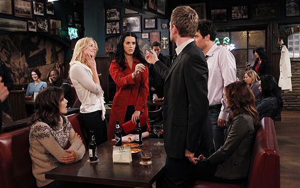La voz de “Dark Horse” interpretó a Honey, apodo que Ted del futuro le dio por no recordar su nombre real mientras contaba la historia. Es prima de Zoey Pierson (Jennifer Garrison, conocida por su papel de Dr. Allison Cameron en House). / Capítulo: “Oh Honey”, Temporada 6, Episodio 15.
Britney Spears
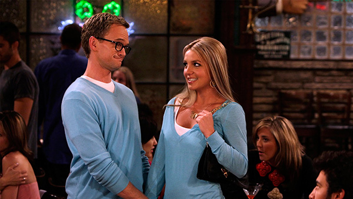Justo en medio de los problemas de drogas y la custodia de sus hijos (y después de raparse el pelo), la cantante apareció en dos capítulos como Abby, la recepcionista de la dermatóloga Stella Zinman. Su personaje se enamora obsesivamente de Ted, pero cae en las manos de Barney. / Capítulos: “Ten Sessions”, Temporada 3, Episodio 13; y “Everything Must Go”, Temporada 3, Episodio 19.
Jennifer López
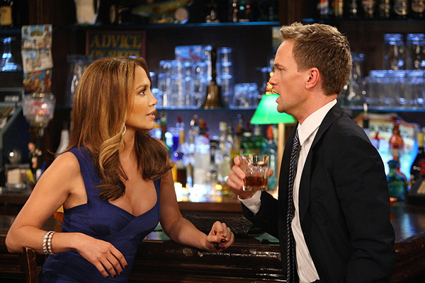La ex de Marc Anthony interpretó a la escritora Anita Appleby, quien escribió un libro de citas. Se declara feminista y es contratada por Robin para seducir a Barney como despecho por su frialdad. / Capítulo: “Of Course”, Temporada 5, Episodio 17.
Bryan Cranston
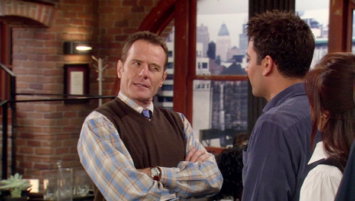Antes de ser Walter White, el actor fue el duro Hammond Druthers, jefe de Ted en la empresa de arquitectura donde trabaja. Años después, sus vidas volverían a encontrarse. / Capítulos: “Aldrin Justice”, Temporada 2, Episodio 6; “Columns”, Temporada 2, Episodio 13; y “Platonish”, Temporada 9, Episodio 9.
Enrique Iglesias
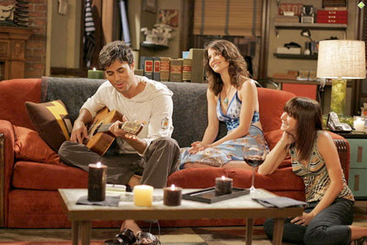El intérprete de “Bailamos” personificó a Gael, el novio latino que Robin conoció en su viaje a Argentina para olvidarse de los malos momentos románticos vividos en el último tiempo. Incluso, el español se da el tiempo de cantar su éxito “Alguien soy yo”. / Capítulos: “Wait for It”, Temporada 3, Episodio 1; y “We’re Not from Here”, Temporada 3, Episodio 2.
Mike Tyson
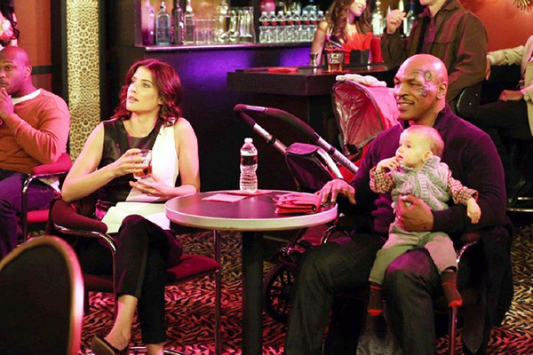El temible boxeador se convirtió en un adorable y tierno “tío” de Marvin, luego de que Robin, debido a su miedo a sostener bebés, no pudiera tomar en brazos al hijo de Lily y Marshall, y el rudo Mike le ayudara. / Capítulo: “Bad Crazy”, Temporada 8, Episodio 16.
Ralph Macchio y William Zabka
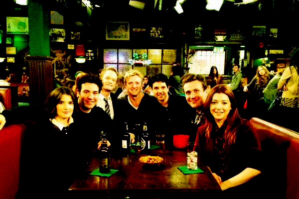Los protagonistas de Karate Kid se reúnen en persona en la serie. Macchio sólo aparece en el capitulo de la despedida de soltero de Barney, mientras que Zabka actúa en varios episodios relacionados con Barney. / Capítulos: “The Bro Mitzvah”, Temporada 8, Episodio 22; “The Broken Code”, Temporada 9, Episodio 4; “The Poker Game”, Temporada 9, Episodio 5; “Mom and Dad”, Temporada 9, Episodio 10; “Daisy”, Temporada 9, Episodio 20; “Gary Blauman”, Temporada 9, Episodio 21; y “The End of the Aisle”, Temporada 9, Episodio 22.
George Clinton
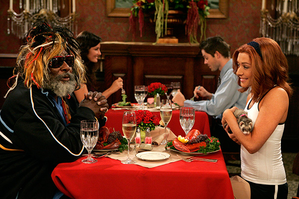El artista funk fue uno de los primeros invitados a la serie. Apareció como él mismo siendo un pretendiente de Lily en una escena imaginada por Marshall. / Capítulo: “Where Were We?”, Temporada 2, Episodio 1.
Tim Gunn
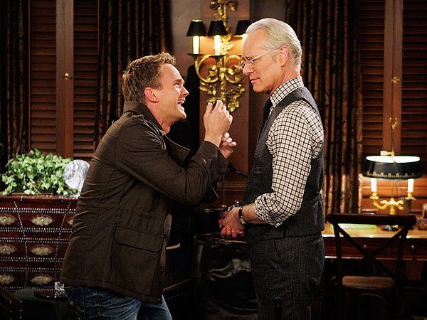El mentor de los diseñadores del reality Project Runway apareció en varios capítulos de la serie como el sastre que crea y arregla los diversos trajes de Barney. / Capítulos: “Girls Versus Suits”, Temporada 5, Episodio 12; “The Broken Code”, Temporada 9, Episodio 4; “The Poker Game”, Temporada 9, Episodio 5; “Sunrise”, Temporada 9, Episodio 17; y “The End of the Aisle”, Temporada 9, Episodio 22.
Carrie Underwood
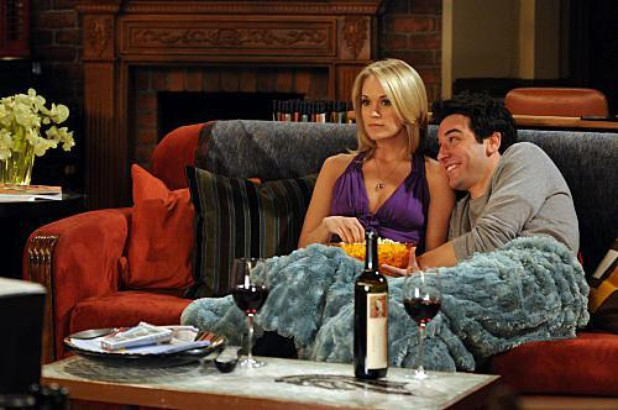La ganadora de American Idol apareció como la dulce Tiffany, quien “enganchó” a Ted pero nunca dejó a su novio, en un capítulo en la que también actuó como ejemplo de una de las tantas explicaciones de teorías de Barney. / Capítulo: “Hooked”, Temporada 5, Episodio 16.
James Van Der Beek
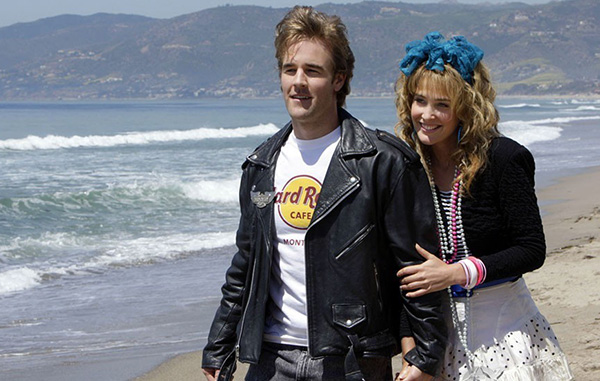El otrora protagonista de Dawson’s Creek fue parte de la serie en varias oportunidades como Simon, el novio de juventud de Robin en plena carrera artística de la canadiense. / Capítulos: “Sandcastles in the Sand”, Temporada 3, Episodio 16; “P.S. I Love You”, Temporada 8, Episodio 15; y “Bedtime Stories”, Temporada 9, Episodio 11.
Jorge García
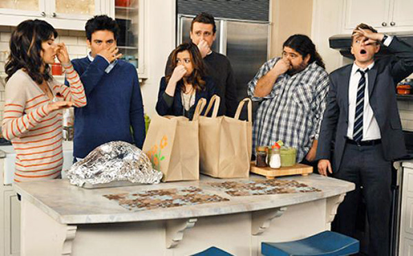El chileno-estadounidense, figura en la serie Lost, hizo su aparición como Blitz, un amigo de la juventud de Ted y Marshall, conocido por la maldición que lleva su nombre y que se traspasa entre los personajes: los mejores acontecimientos pasan cuando él se va de un lugar. Además, hace diversas alusiones a Lost en los capítulos que aparece. / Capítulos: “Blitzgiving”, Temporada 6, Episodio 10; y “Gary Blauman”, Temporada 9, Episodio 21.
Kim Kardashian
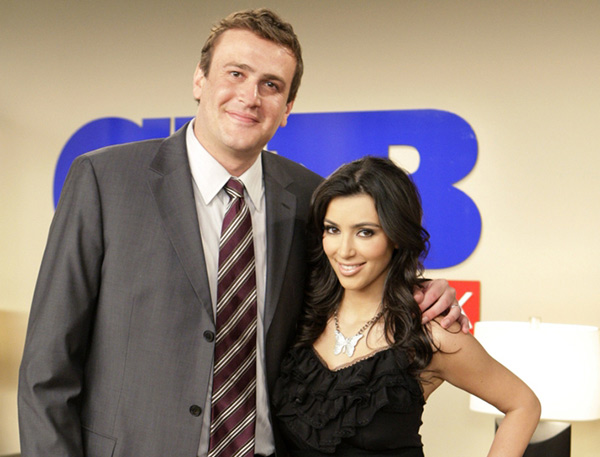La esposa de Kanye West hizo una breve aparición en el capítulo en que Marshall se siente juzgado por sus compañeros de trabajo por ir al baño de la empresa, por lo que decide ir al del departamento donde viven Ted y Robin. Kardashian, portada de una revista que Marshall usa para ir al baño, lo felicita por dejar atrás los prejuicios e incluso le da una cita de Shakespeare. / Capítulo: “Benefits”, Temporada 4, Episodio 12.
Modelos de Victoria’s Secret
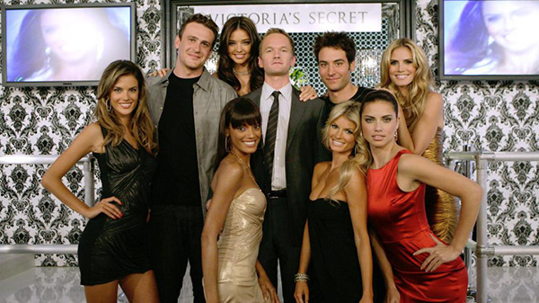Después de un reencuentro traumático, Barney decide ir a la fiesta de Victoria’s Secret Fashion Show junto a Ted y Marshall, en donde la propia Heidi Klum le aconseja para continuar con sus conquistas femeninas. / Capítulo: “The Yips”, Temporada 3, Episodio 10.